Three days of rain — Iran’s floods and a record El NiñoFloods across Iran, 6–8 November 2026 · English & Persian subtitles
01Acquisition
About
Water, satellites and data.
I'm an environmental engineer (MSc, Sharif University of Technology) working at the interface of hydrology, satellite remote sensing and machine learning. I build Earth-observation workflows in Google Earth Engine and Python, model surface water and groundwater with WEAP, MODFLOW and MIKE, and turn model results into decision support for water management.
My work on a decision-support system for the Lake Urmia basin, carried out with the University of Delaware, is published in the Journal of Hydrology and was presented at AGU24. I also have hands-on experience in water-quality laboratory analysis and review regularly for Elsevier journals.
44Peer reviews for Elsevier journals
+31%Environmental water supply in optimized allocation scenarios
17.71/20MSc GPA, Sharif University
AGU24Conference presentation, Washington, D.C.
Earth from space · my YouTube channelVisit the channel
02SPECTRAL BANDS
Skills
Tools and methods.
Remote sensing
Machine learning & data
Hydrology & groundwater
GIS & data management
Water quality
Languages
03CLASSIFICATION
Projects
Research and engineering projects across water resources and Earth observation, each linked to the open-source code that reproduces its methods.
Live demo · Earth observation
Global Waterbody Area Trends, 1984–2025
Forty years of Landsat surface-water area for nearly 600 lakes and wetlands. Colour shows each water body's long-term trend; click a point to see its annual water-area curve and fitted trend.
Live demo · Earth Engine app
GSW Lake Explorer: Lake Razazah, 1984–2021
A public Earth Engine app running inside this page. It opens on Lake Razazah (Iraq), which lost about three quarters of its permanent water between 1984–1993 and 2012–2021, with its yearly JRC Global Surface Water animation, area chart and decade comparison. Click any other lake on the map, or search a name, to explore it. The frames take a few seconds to render.
Research projects
8 projectsWater resources · Decision support
Decision Support System for the Lake Urmia Basin
A forecast-informed decision support system for real-time water allocation, coupling a daily WEAP water-balance model with inflow forecasts. Multi-objective evolutionary optimization and AHP were used to compare scenarios; optimized strategies raised environmental water supply by 31% and agricultural profit by 26%.
Related codeBasin Hydroclimate Time Series →
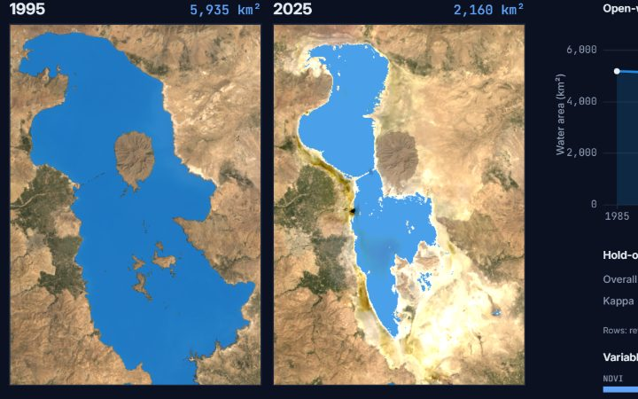
Earth observation · Machine learning
Wetlands Monitoring System
Multi-year satellite monitoring workflows (Landsat, Sentinel-2) for surface water and land cover in Google Earth Engine and Python, using Random Forest and K-means for classification and change detection, with full accuracy assessment.
Remote sensing · MSc thesis
Satellite-Based Surface Water Assessment
Surface-water mapping combining Random Forest classification, K-means clustering and spectral water indices in Google Earth Engine.
Groundwater
Dam Leakage & Aquifer Response
MODFLOW simulation of dam leakage and aquifer response to an adjacent river, with analytical and numerical solutions implemented in Python.
Related codeElevation Along a Cross-Section →
Hydrology
Fallat-e-Markazi Sub-Basin Water Balance
Water balance of the sub-basin in ArcGIS and Python, with a chloride (salinity) time series modelled in Python.
Hydrodynamics
Oil-Slick Transport in the Karkheh Reservoir
Hydrodynamic modelling of oil-slick transport in the Karkheh reservoir using MIKE.
Remote sensing & GIS
Land Cover & Watershed Mapping
Land-cover classification in ENVI and Python, surface-water mapping with K-means in Google Earth Engine, and watershed delineation in ArcGIS.
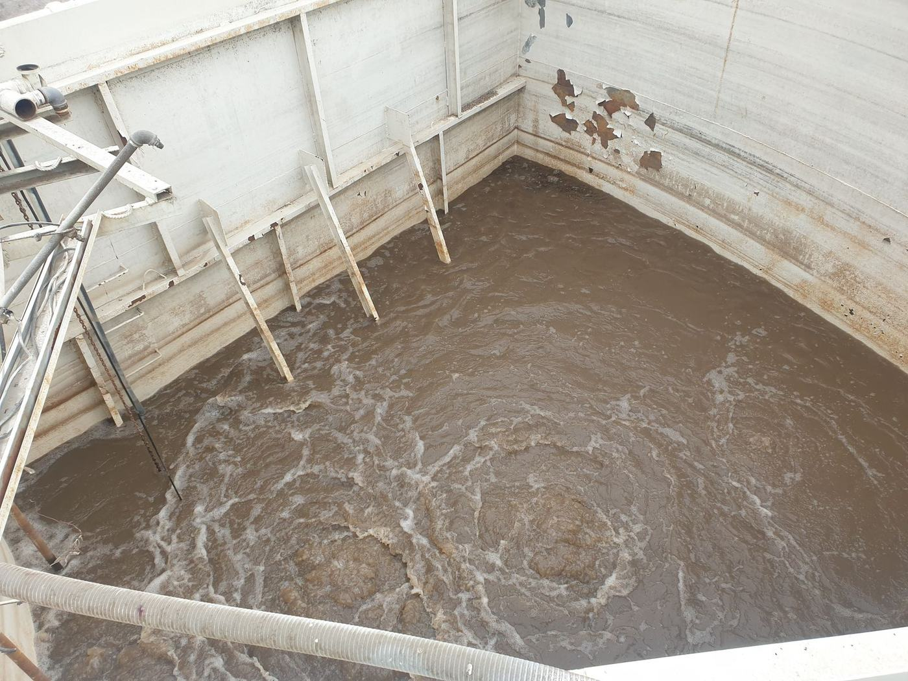
▶ Interactive plant tourWastewater treatment · Field visit
Industrial Wastewater Treatment Design & Zamzam Plant Visit
Final course project designing a treatment tank for industrial wastewater. To ground the design in a real system, I arranged a site visit, on my own initiative, to the on-site treatment plant of Zamzam Tehran, a soft-drink producer, and studied its activated sludge aeration basins, secondary clarifiers and routine process control such as the SV30 settleability test.
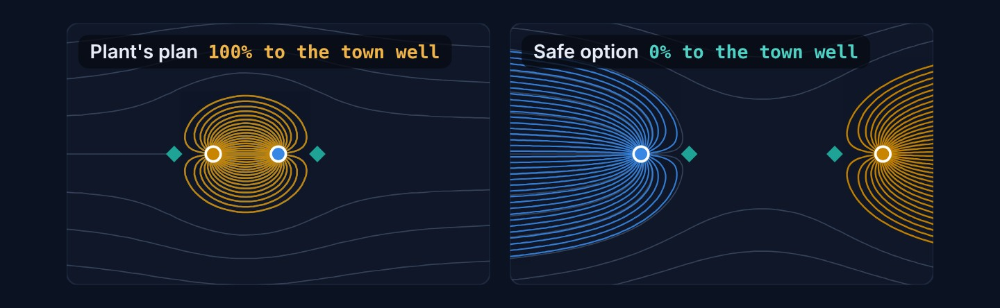
Open-source tools & tutorials
github.com/RisaRezaei ↗Everything below is my own code, public on GitHub under the MIT licence. Each tool has a tutorial page with its demo output, the method, and a step-by-step walkthrough of the source.
@RisaRezaeipublic repositories on GitHub
12public repositories
11Earth Engine tools & course
2Python command-line tools
2,446lines of documented code
Techniques in the codeCloud masking & QA bitsMulti-sensor harmonisationRandom Forest (classification & regression)Accuracy assessmentSen’s slope & Mann-KendallZonal statisticsTime-series compositingUnit conversionBatch exportsPython CLIsrasterio / GeoPandasResumable API downloads
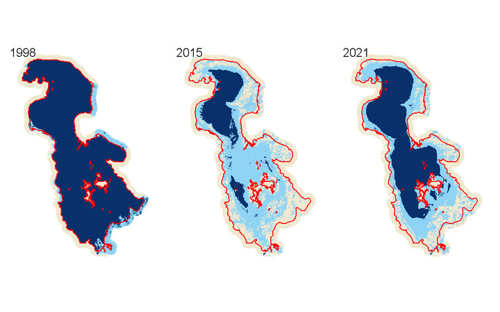
9 stepsEarth Engine JSEarth Engine · Live app
GSW Lake Explorer: Any Lake on Earth, 1984–2021
A public Earth Engine app: click any lake on Earth and watch its JRC Global Surface Water history, with a yearly area chart, a decade comparison and a shareable link. No sign-up.
Earth Engine · Machine learning
Wetland Water Mapping with Random Forest
Landsat 5–9 open-water classification on eight spectral water indices, with hold-out accuracy, variable importance and a water-area series since 1984.
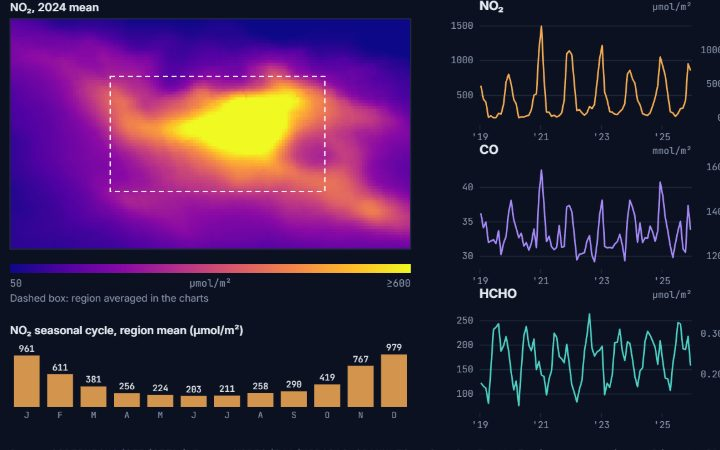
7 stepsEarth Engine JSEarth Engine · Atmosphere
Air-Quality Toolkit
Monthly NO₂, SO₂, CO, O₃, HCHO (Sentinel-5P) and aerosol optical depth (MODIS) for a region and its stations, in one tidy CSV.
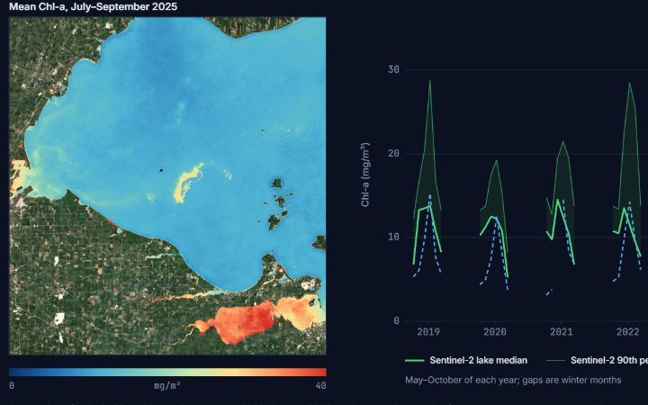
8 stepsEarth Engine JSEarth Engine · Water quality
Lake Chlorophyll-a Monitor
Sentinel-2 NDCI chlorophyll-a for lakes and reservoirs with Cloud Score+ masking, monthly lake statistics and a MODIS-Aqua comparison.
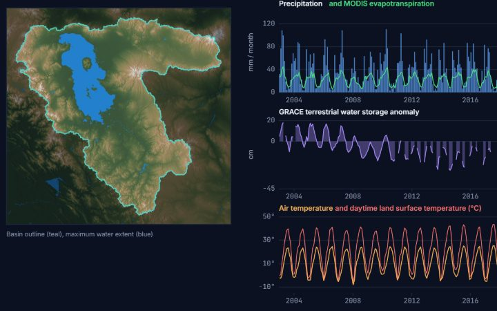
7 stepsEarth Engine JSEarth Engine · Hydrology
Basin Hydroclimate Time Series
Monthly precipitation, evaporation, MODIS ET, temperature and GRACE water storage averaged over any river basin, as one table.
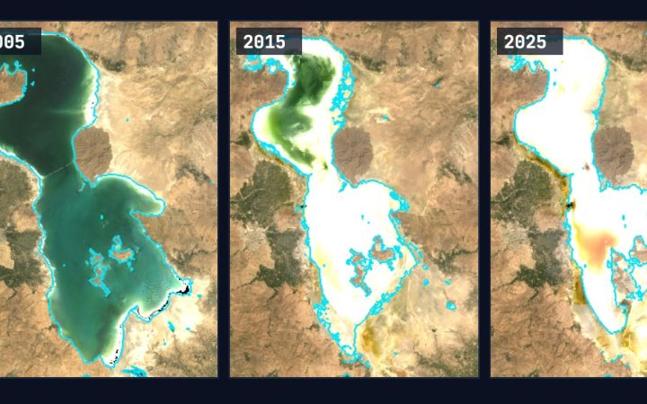
5 stepsEarth Engine JSEarth Engine · Visualisation
Landsat Timelapse for Lakes and Wetlands
Forty years of cloud-free summer composites turned into an animated GIF, with the shoreline traced on every frame.
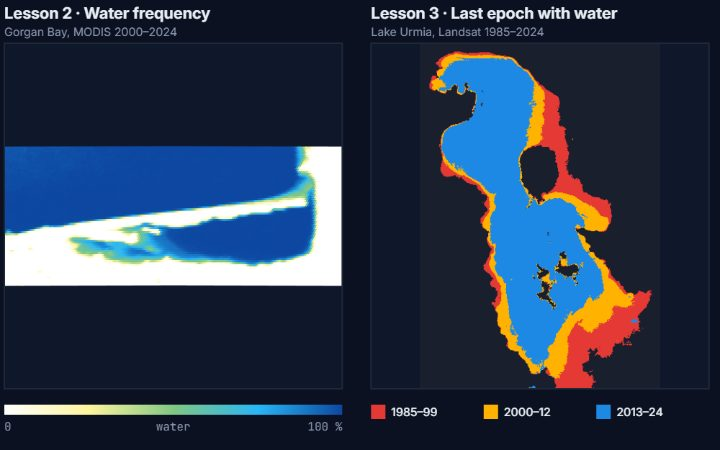
6 lessons · 35 stepsEarth Engine JSEarth Engine · Teaching
Earth Engine for Water Resources: a Short Course
Six commented lessons for students: water frequency, multi-temporal water maps, soil-moisture downscaling and rainfall trend tests.
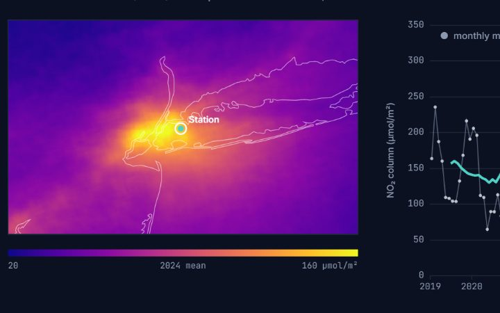
6 stepsEarth Engine JSEarth Engine · Atmosphere
NO₂ Tracking at Air-Quality Stations
Daily or monthly tropospheric NO₂ from Sentinel-5P TROPOMI at many monitoring stations, with a multi-station chart, a mean NO₂ map and a tidy CSV export.
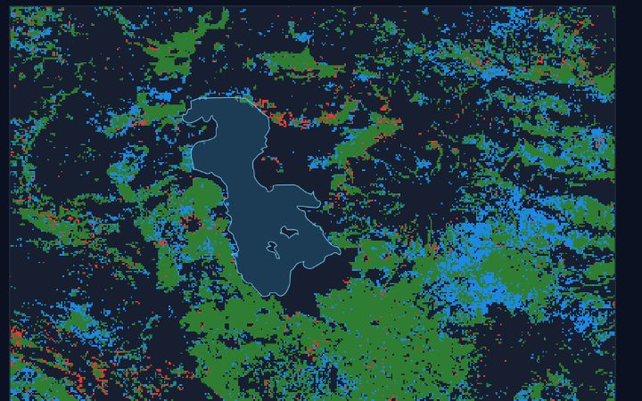
6 stepsEarth Engine JSEarth Engine · Land cover
Global Cropland Dynamics, 2003–2019
Maps stable cropland, gains and losses at 30 m from the GLAD global cropland maps, reports the area of each class and exports GeoTIFFs.
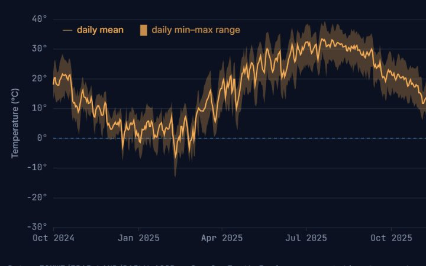
6 stepsEarth Engine JSEarth Engine · Climate
Daily Temperature at Multiple Stations
Daily mean, minimum and maximum 2 m temperature from ERA5-Land at any number of stations, exported as one tidy CSV in °C.
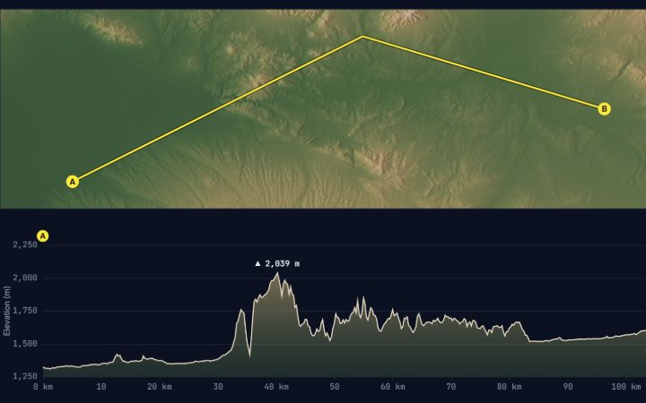
6 stepsEarth Engine JSEarth Engine · Terrain
Elevation Along a Cross-Section
Samples SRTM or Copernicus DEM every n metres along any line or polyline, charts the terrain profile and exports it as CSV.
$ python era5_download.py …
INFO 2 request(s) planned -> data/era5
Python · Command-line tool
ERA5 Pressure-Level Downloads via CDS API
Command-line tool for ERA5 monthly-mean humidity, winds and other pressure-level variables from the Climate Data Store, with config files, sub-regions and resumable downloads.
$ python sample_rasters.py …
INFO 5 points, 4 rasters
INFO [1/4] t2m_20230115.tif
INFO [2/4] t2m_20230415.tif
Python · Command-line tool
Raster Values at Point Locations
Command-line tool that samples a stack of rasters at points, with automatic reprojection and nodata handling, into one Excel, CSV or GeoPackage table.
04CHANGE DETECTION
Publications & Peer Review
Selected outputs.
Journal article · 2026
Meydani, A., Abbasalizadehrezaei, P., Javadian, M., Khodaei, H., Tajrishy, M., Levia, D.F. (2026). Scenario-driven decision support system for assessing water balance to support agricultural and ecosystem sustainability. Journal of Hydrology, 665, 134679.
doi:10.1016/j.jhydrol.2025.134679 →Conference · 2024
Abbasalizadehrezaei, P., Meydani, A., Khodaei, H., Tajrishy, M., Levia, D.F. (2024). An integrated decision support system for balancing agricultural and environmental water use in the Urmia Lake Basin. AGU24 Annual Meeting, Washington, D.C.
Software · 2026 · Zenodo
Abbasalizadehrezaei, P. (2026). Twelve open-source tools for Earth-observation, water and climate data (Version 1.0.0) [Software]. Zenodo. MIT licence.
- Wetland Water Mapping with Random Forest 10.5281/zenodo.23646350
- Air-Quality Toolkit (Sentinel-5P and MODIS MAIAC) 10.5281/zenodo.23646371
- Lake Chlorophyll-a Monitor 10.5281/zenodo.23646373
- Basin Hydroclimate Time Series 10.5281/zenodo.23646375
- Landsat Timelapse for Lakes and Wetlands 10.5281/zenodo.23646377
- Earth Engine for Water Resources: a Short Course 10.5281/zenodo.23646381
- NO₂ Tracking at Air-Quality Stations 10.5281/zenodo.23646385
- Global Cropland Dynamics, 2003–2019 10.5281/zenodo.23646395
- Daily Temperature at Multiple Stations 10.5281/zenodo.23646400
- Elevation Along a Cross-Section 10.5281/zenodo.23646404
- ERA5 Pressure-Level Downloader 10.5281/zenodo.23646410
- Raster Point Sampler 10.5281/zenodo.23646412
Peer review · 12/2024 – present
44 reviews for Elsevier: Journal of Environmental Management (35), Agricultural Water Management (8) and Journal of Hydrology (1), covering hydrology, remote sensing and water management.
05DECISION SUPPORT
Experience
Research and teaching.
Research Collaborator, University of Delaware, USA (remote)
- Co-developed a forecast-informed decision support system for real-time water allocation in the Lake Urmia basin, coupling a daily WEAP water-balance model with inflow forecasts.
- Applied multi-objective evolutionary optimization and AHP to compare allocation scenarios; optimized strategies raised environmental water supply by 31% and agricultural profit by 26%.
- Results published in the Journal of Hydrology and presented at AGU24.
Teaching Assistant, Water Environment Analysis Laboratory
- Guided students through water-quality and hydrochemical experiments and assessed their lab reports.
Research Assistant, Sharif University of Technology
- Built multi-year satellite monitoring workflows (Landsat, Sentinel-2) for surface water and land cover in Google Earth Engine and Python.
- Applied Random Forest and K-means for classification and change detection, including accuracy assessment.
06GROUND TRUTH
Education
Degrees, distinctions and training.
MSc, Environmental Engineering
Thesis: satellite-based assessment of surface water using Random Forest classification, K-means clustering and spectral indices in Google Earth Engine.
BSc, Civil Engineering
Distinctions
- Member of the winning team for the 3-year grant "Development of a Wetlands Monitoring System", Sharif.
- Ranked 1st in Groundwater Contamination, Advanced Hydrology and Water Environment Analysis Laboratory (MSc).
- Elsevier reviewer recognition: J. Environmental Management, Agricultural Water Management, J. Hydrology.
Workshops
- Remote Sensing for Water Accounting Plus (WA+), IHE Delft (2021)
- Remote sensing with Google Earth Engine, UNESCO Chair workshop (2020)
07DOWNLINK
Contact
Open to research, data and engineering roles and collaborations across Europe.
Email
risarezaei@gmail.com
LinkedIn
linkedin.com/in/risarezaei
ORCID
0009-0009-5708-7673
GitHub